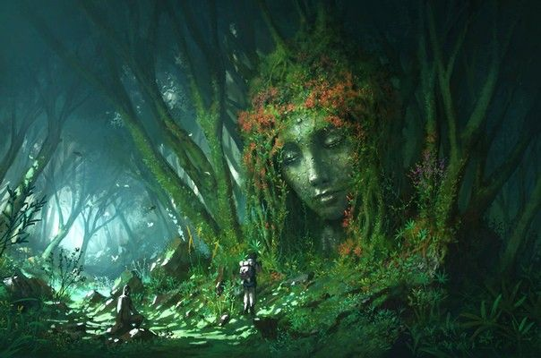

| Élément | Description |
|---|---|
| Origine | Issue du Chaos primordial |
| Époux | Ouranos |
| Enfants | Titans, Cyclopes, Hécatonchires |
Au commencement, il n’y avait que le Chaos, un vide immense et silencieux.
De cette obscurité naquit Gaïa, vaste et fertile, s’étendant dans l’infini.
Elle fut la première terre, la première matière solide, le fondement du monde.
De son propre corps surgirent les montagnes escarpées et les plaines verdoyantes.
Les mers creusèrent ses flancs et les forêts couvrirent sa peau.
Mais Gaïa ne voulait pas être seule.
Alors elle engendra Ouranos, le Ciel étoilé, qui la recouvrit et devint son époux.
Ensemble, ils donnèrent naissance aux Titans, aux Cyclopes et aux puissants Hécatonchires.
Pourtant, Ouranos craignait la puissance de ses enfants et les enferma dans les profondeurs de la Terre.
Gaïa, blessée et furieuse, poussa son fils Cronos à se rebeller.
Ainsi débuta la première grande lutte divine.
Gaïa demeure la matrice du monde, la force immuable et éternelle, la Terre que l’on foule et que nul ne peut dominer.